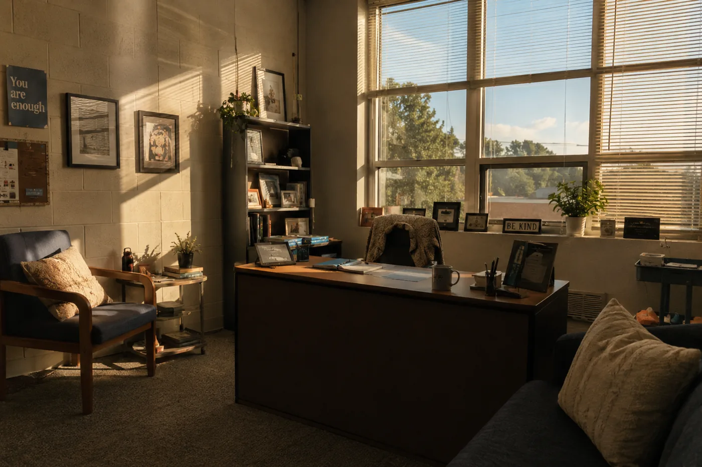
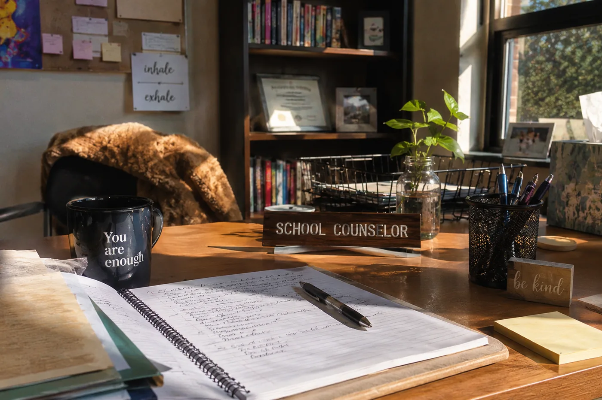

A counselor with 480 students cannot know all of them.
The notebook is in a drawer in her home office, which used to be a guest room and is now mostly boxes. Darlene Mays has not opened it since sometime in August. She knows what's in it. It is a list of students she meant to follow up with, written in the blue rollerball pen she used for everything because she bought them in bulk and they were always in reach. The list has about thirty names on it. Some of them have a small checkmark. Most don't.
She retired in June after eleven years as a school counselor in Fresno Unified. Not dramatically. She did not have a breakdown, or a moment, or a conversation that made her understand something irreversible. She did the math and left. That is how she describes it: she did the math.
The first morning she did not have to be anywhere, she woke up at 6:15 anyway. She lay in bed for a while. She thought about a student she had flagged for follow-up in April and then forgot. She got up, made coffee, sat at the kitchen table, and did not open her laptop. That was new. After a while she went outside. The neighborhood was quiet. She describes this as a good morning. It was also the morning she understood she was not going back.
The math is not complicated. She had 480 students. The American School Counselor Association recommends a ratio of 250 to one. California's average runs closer to 430. By that measure she was not an outlier. She was the norm, slightly above it, which is a way of saying she was doing exactly what the system asked of her, and the system asks quite a lot.
What she knew about, specifically, was thirty of them. The ones who came in because something went wrong. The ones whose parents called, or whose teachers flagged them, or who showed up after a grade that didn't make sense, or after a day that had clearly gone somewhere bad. "There were students I knew something real about," she said. "Then there were students I knew in the language of their files. That's most of them."
The language of a file is a particular kind of not-knowing. It tells you attendance, GPA, whether the student qualifies for free lunch, what courses she's enrolled in, whether anything has been flagged. It does not tell you what she is thinking about at 2:30 on a Tuesday. It does not tell you whether the thing showing up as a chemistry grade is actually chemistry.

The Twelve Minutes
On a Thursday in February of her last year, Darlene had twelve minutes between appointments. A student named Jerome had been failing chemistry for a full semester. She pulled him in. He was a junior, quiet, the kind of quiet that reads as fine until it doesn't. He answered her questions carefully and none of his answers had anything to do with chemistry. There had been something at home in October. She could tell without him saying so. She did not push. She made a note in the margin of her calendar: October. Come back to this.

She did not come back to it. In the way the next five months unfolded, she never found another twelve minutes for Jerome, and then it was June and she was pulling things off walls and packing boxes, and Jerome was a junior who had failed chemistry and would need to retake it in the fall.
She is not telling this as a story about Jerome. Jerome is probably fine, she says. He was bright. She has not looked him up. What she is saying is that the twelve-minute appointment was the only chance she had, she spent it correctly, and it was still not enough. That is what it felt like to do the job well.
"There were students I knew something real about. Then there were students I knew in the language of their files. That's most of them."
When she talks about those years now she does not use words like crisis or failure. She uses the language of logistics. She had 480 students. The day had seven hours. The math did not work out.
What the File Couldn't Show
In her last two years at the school she started using a platform called Kindred, which works the way a good first conversation works: it asks students what they care about, listens to what comes back, and asks again. Students move through it on their own, usually on a school computer, during a free period or after class. When they finish, the counselor gets a notification. She can see what the student wrote, what interests surfaced, what careers came up, what they said in the reflection field at the end.
The first time she got one of those notifications she read it twice. A student she had never spoken to, a sophomore, had described wanting to work in something where she could argue on behalf of people who didn't know how to argue for themselves. She had written it in her own words, slightly grammatically loose, the way you write when nobody is grading it. Darlene looked at the name. She pulled the file. Attendance fine. GPA 2.9. Nothing flagged. The file told her nothing about this. The reflection told her something true.
She started scheduling those students first. The ones who had completed a reflection. Not because they needed her more than the others, but because she finally had something to work with. She could walk in knowing where they were starting from. She could ask a real question in the first two minutes instead of spending the appointment finding one. "It's not that the platform did the counseling," she said. "It just made the twelve minutes count for more."
She wishes she had had it for Jerome.
There is a printout still taped to the wall of her old office. She left it when she packed up because it didn't feel like hers to take. It was a career reflection from a student she had never spoken to. He had used the platform on a Thursday afternoon, alone, during a free period, and he had written about what he wanted with a specificity she hadn't expected from someone whose name she barely knew. He wrote about fairness, about wanting to be somewhere decisions got made, about something that had happened when he was twelve that she couldn't quite reconstruct from the paragraph but which had clearly stayed with him. She printed it and put it on the wall to remind herself that the ones she couldn't reach were thinking about things too.
She does not remember his name. She had 480 students.
His name was Marcus. He is twenty-two now and works the overnight shift at a distribution center outside Stockton, which means he is asleep by noon and up around eight in the evening and the day runs backward from most people's. He remembers her name.
The Things That Stay With You
Marcus used the platform in eleventh grade, during the spring semester, on a school computer in the library during a free period. He had not been to the counselor's office in two years. Not because anything was wrong. Because there was always a line and the line was always longer than the time between his classes, and at some point he stopped checking whether it had gotten shorter.
He remembers the library being mostly empty that afternoon. Two other kids at a table near the window, talking about something. The question on the screen asked what mattered to him and he sat with it for a minute before typing. He said he answered more honestly than he expected. "When nobody's going to grade it, you just say the thing."
What came back surprised him. Public policy. Urban planning. Something called civic technology. He did not know what civic technology was. He looked it up on his phone that evening, then again two days later, and wrote the words in the margin of a notebook next to some geometry he hadn't finished. He thought about it off and on through the spring.

Then his senior year started, and his father's hours at the plant got cut in October, and Marcus picked up evening shifts at a grocery store to help cover the gap. He was stocking shelves from six to eleven, four nights a week, and getting home late enough that homework was a negotiation he usually lost. The college applications he had half-started in September sat open in a browser tab he kept meaning to return to. He looked at them in November and the deadlines had passed for two of the schools. He looked again in December and closed the tab. Not as a decision. It was just a thing that happened, the way things do when the space for them disappears a little at a time.
He is twenty-two. He works overnight. He enrolled in community college last spring and took two classes, which is what the shift schedule allows. He knows what he wants to study. He says it plainly, the way you state a fact about yourself that has been true long enough to stop being interesting. Public administration, maybe. Something where decisions get made. He is getting there.
What he has not forgotten is that someone asked him the right question when he was sixteen. He answered it. The answer is still true. He is clear about that: it is not nothing.
The List in the Drawer
Darlene does not know about Marcus. She knows there was a student. She knows she printed something and put it on the wall because she wanted to remember that the ones she couldn't reach in twelve minutes were not blank. "I always thought about the students I had appointments with," she said. "I never thought enough about the ones I didn't." She paused. "You can't, really. You'd never stop."
She still thinks about Jerome sometimes. She does not know why Jerome more than the others. Probably because of the calendar note. Something about writing a thing down and not returning to it makes it harder to let go than the things you simply forgot.
She has the notebook in the drawer with the checkmarks and the names and the margins full of notes she meant to act on. She has not opened it because she already knows what it says. The names are still there. The checkmarks are still outnumbered.
The list does not get shorter by looking at it.
Home: The Atlantic, Hechinger Report. Anchor piece for unrestricted donor campaign.
Audience: Donors asking what the gap looks like from inside it. Board members. Anyone who needs honest over polished.
Goal: Earns the right to publish every other story by telling this one first. Credibility through honesty.